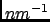

Next: Smoothed Static Coherent Structure
Up: Static Coherent Structure Factor
Previous: Parameters
Contents
The results of a SCSF analysis are stored in a NetCDF file whose main variables are namely:
- octan: an array storing the codes for space octan. For example, X+Y+Z+ for the space octan corresponding to positive
X, Y and Z.
- qvectors_statistics: array storing the number of q-vectors generated per space octan,
- q: the q-shells radii in ,
- time: the times in ps at which the intermediate coherent scattering function is evaluated,
- frequency: the frequencies in THz at which the coherent structure factor is evaluated,
- Sqw-total: the total dynamic coherent structure factor,
- Sqw-XY: the partial dynamic coherent structure factor for species X and Y.
pellegrini eric
2009-10-06